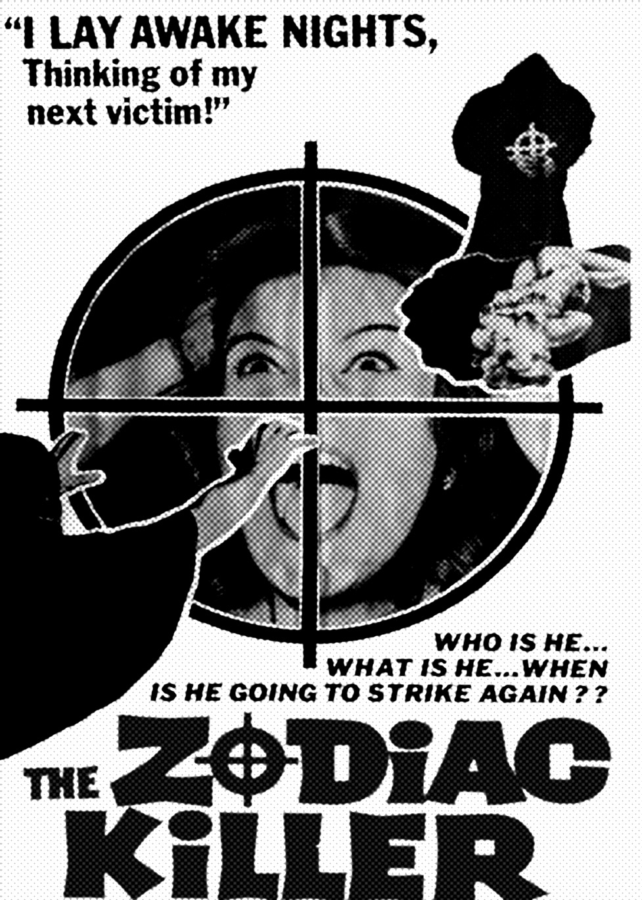
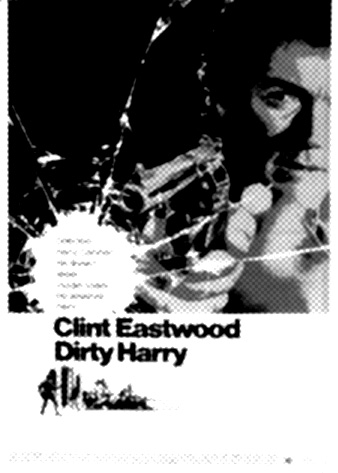
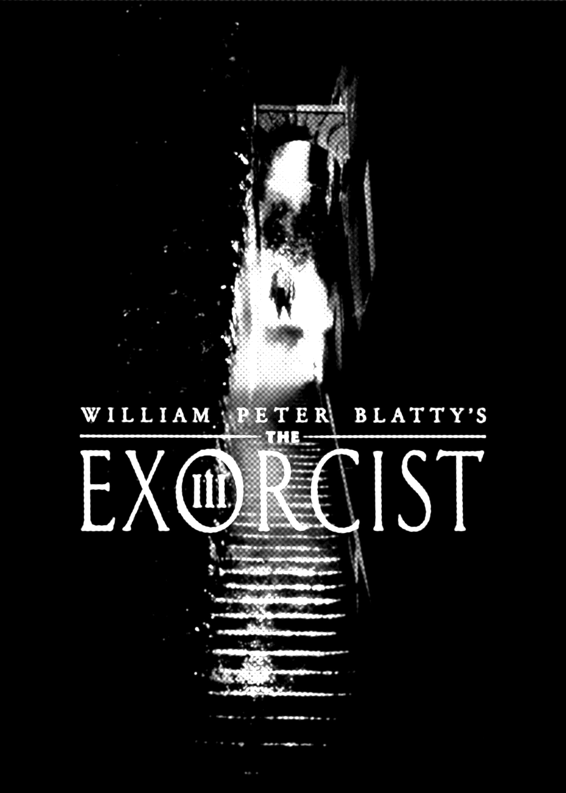
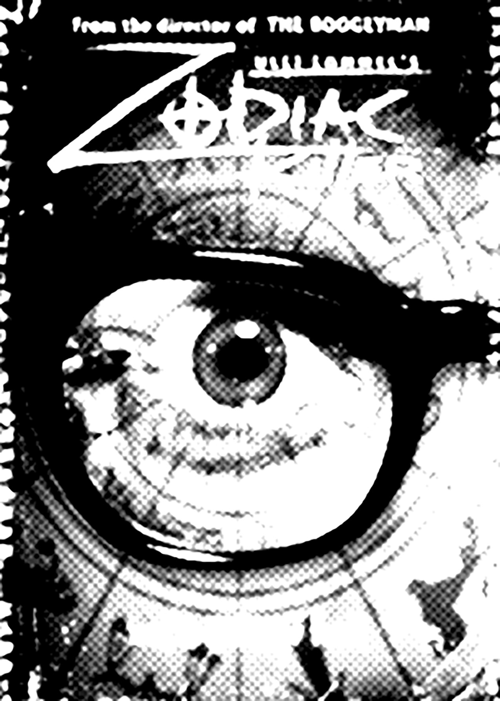
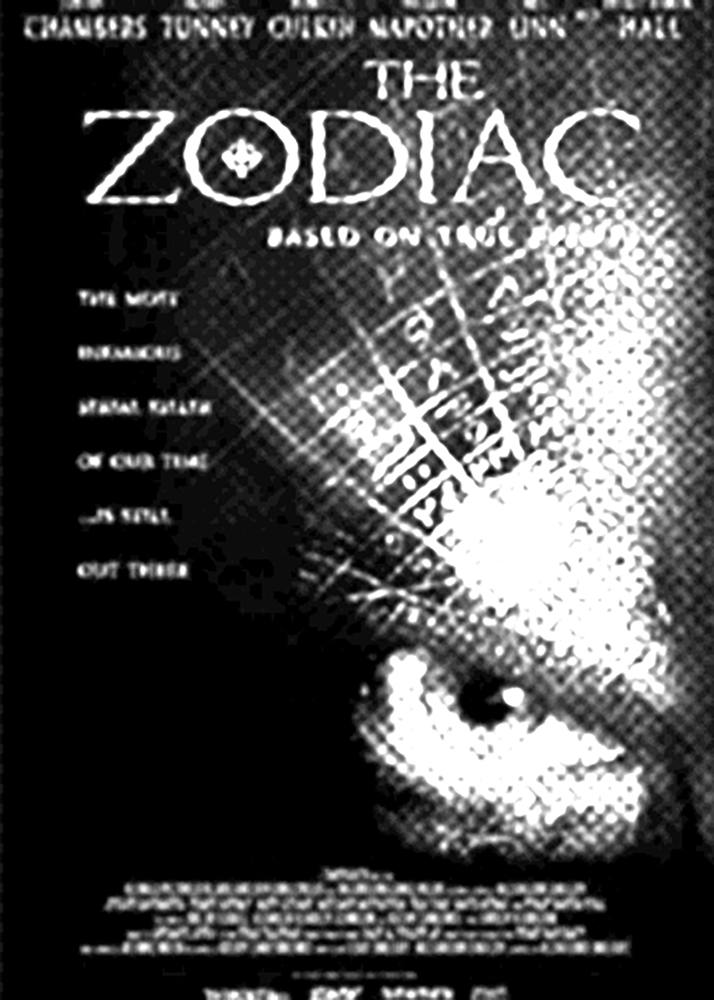
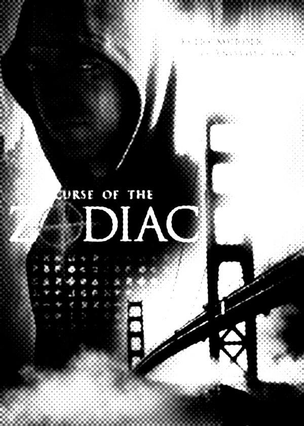
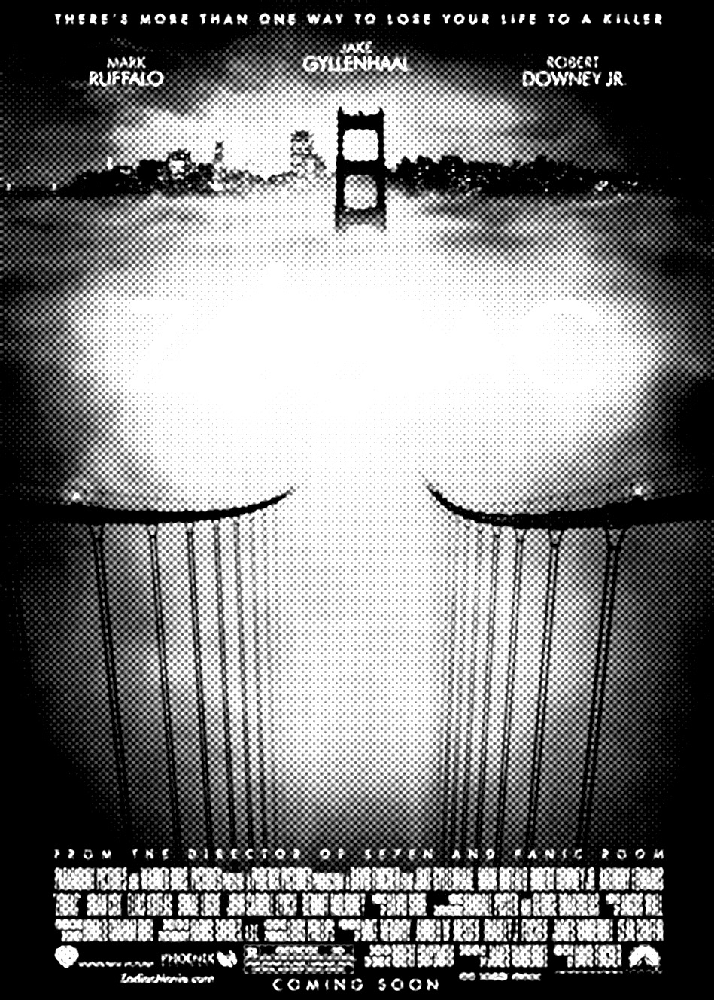
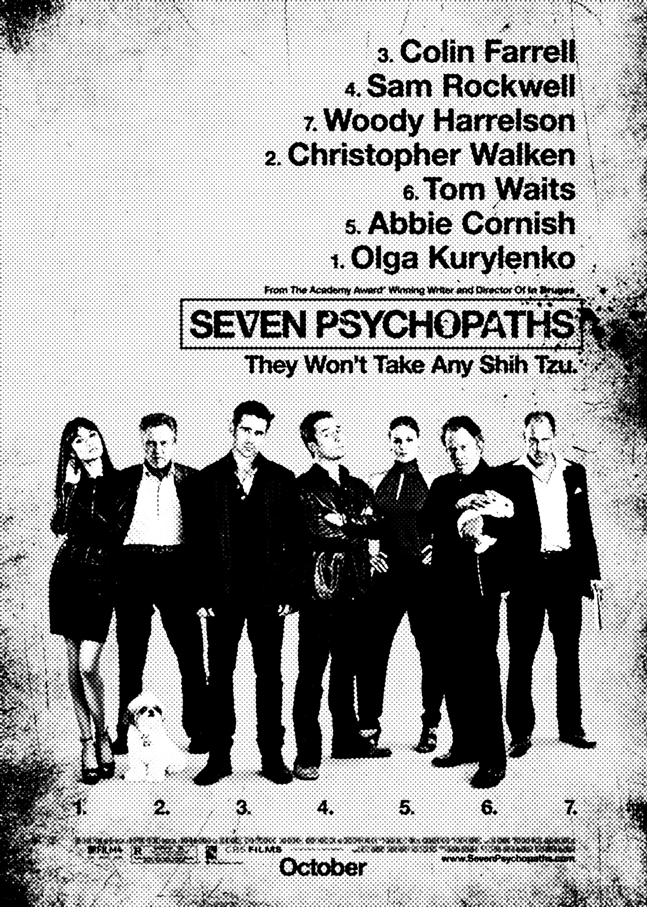
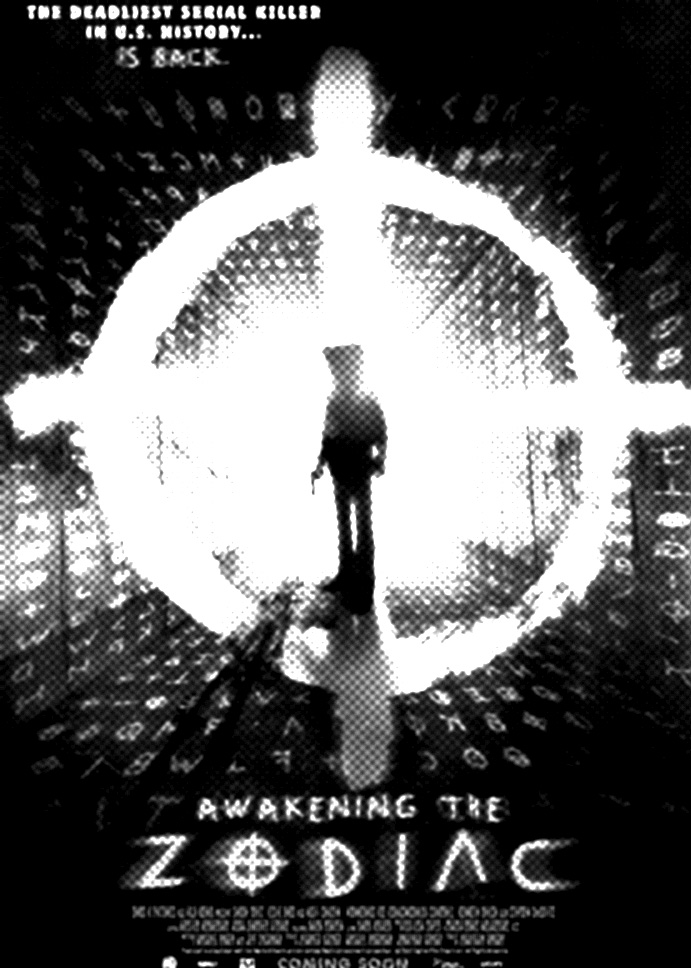

The Zodiac Killer (1971), released while the killer was still active, was directed by Tom Hanson and starred Hal Reed and Bob Jones.

Dirty Harry (1971), released while the killer was still active, was loosely based on the Zodiac case, featuring a serial killer who calls himself "Scorpio" (a sign in the Zodiac),[1] who at one point kidnaps a school bus full of children, mirroring the real Zodiac's threat to shoot children on a school bus.[2]

The Exorcist III (1990) has a character named the "Gemini Killer", loosely based on the Zodiac Killer.

Zodiac Killer (2005) is set in the present. Written and directed by Ulli Lommel, it features a nursing home employee who copycats the Zodiac, angering the original killer, who is revealed to be
a member of a moralistic secret society, living under the guise of Zodiac expert
Simon Vale.[4]
a member of a moralistic secret society, living under the guise of Zodiac expert
Simon Vale.[4]

The Zodiac (2006) focuses on telling the story of a Vallejo detective involved in the case, and how it affected him and his family.

Curse of the Zodiac (2007) is a loose retelling of the original murders, also written and directed by Ulli Lommel.

Zodiac (2007) is based on the two non-fiction books by Robert Graysmith: Zodiac and Zodiac Unmasked: The Identity of America's Most Elusive Serial Killer. Filming locations included San Francisco and Los Angeles.

Seven Psychopaths (2012) has the Zodiac Killer make a brief appearance in a flashback, presented as a hippy who lives with a number of white rabbits and displays a Gandhi poster on his wall.

Awakening the Zodiac (2017) stars Shane West and Leslie Bibb as a nearly destitute couple, who find a 50-year-old 8 mm film reel showing murders by the Zodiac Killer, leading them to try and solve the case (rather than contact the police) so that they might make some money.[5]